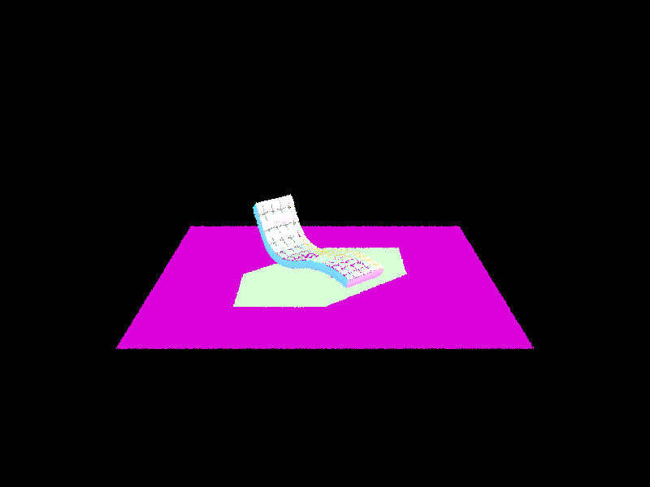

On this assignment, we implemented a ray tracer that supports ray generation, scene intersection, and bounding volume hierarchy.
Part 1: Ray Generation and Scene Intersection
Ray Generation
The rendering pipeline begins with ray generation in camera space. The camera generates rays that simulate light traveling from the eye into the rendered scene.
First, each pixel in the image is treated as a sample location on the virtual camera. Then it is normalized and mapped on a virtual sensor plane in camera space.
Then, we create a ray whose origin is the camera and normalized direction points to the given pixel. We then transform the ray with a camera to a world matrix and assign it an interval. Now, a world ray representing light is created.
After the ray is generated, it is tested against objects in a scene using Bounding Volume Hierarchy scene geometry. Each sub-nodes’ box is tested and if it hits, then we continue traversing the trees until we test primitives like triangles and spheres.
Triangle Intersection
The triangle intersection method implemented for this assignment is the Möller–Trumbore algorithm, which directly solves for the intersection of a ray with a triangle using barycentric coordinates. Because a triangle can be represented as a linear combination of points, we can find the intersection of a ray and a triangle.
First, compute the edges of the triangle. Then using barycentric coordinates, see use the rays coordinates to see if it hits anywhere inside the triangle. After computing the ray parameter (distance along the ray), validate the intersection by ensuring the distance is within the rays defined interval. If it's valid, then store the interpolated point to be displayed.

bench
Part 2: Bounding Volume Hierarchy
The BVH construction algorithm builds a binary tree recursively over the set of primitives (ie. triangles, circles). At each recursive call, first compute a bounding box that encloses all primitives in a given range. This is done by iterating through the primitives and expanding the parent nodes’ box using each primitive’s (or leaf) bounding box.
Then, compute a centroid bounding box, which encloses the centroids of all primitive bounding boxes and gets split along the axis with the largest extent (x, y, or z). This helps ensure that the split happens along the direction where primitives are most spread out, which improves tree balance (avoiding O(n) traversal time).
For the splitting heuristic, use the midpoint of the centroid bounding box along the chosen axis. And use it to partition primitives into two groups based on whether their centroid lies to the left or right of it.
Finally, recursively construct the left and right child node trees.